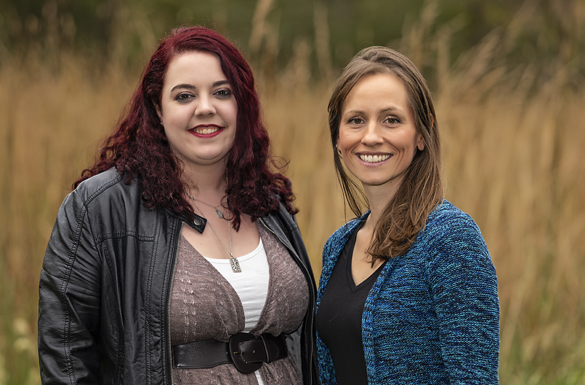

<?xml version="1.0" encoding="UTF-8"?>
<div class="modal-body">
  <div class="col-md-12">
    <div class="row">
      <div class="exit-modal" data-dismiss="modal">
        <i class="fa fa-times">
        </i>
      </div>
    </div>
    <h2 class="modal-title">Hospice and Euthanasia Services</h2>
    <div class="row col-md-12">
      <div class="row">
        <div class="col-sm-6">
          <ul>
            <li>Compassionate approach to end of life decisions</li>
            <li>Private "Comfort Room" for euthanasia</li>
            <li>Cremation Serivces</li>
            </ul>
            <a class="dropdown-link">More Info...</a>
            <div class="row more-info">
            <p>Saying “good-bye” to a beloved family member makes for one of the hardest
                moments in our lives. To honor that moment, we have a dedicated “comfort room”. It is a more private,
                home-like setting than the rest of the hospital and is a space that allows more freely flowing emotions.</p>
          </div>
        </div>
        <div class="col-sm-6">
          <span class="modal-pic">
            
          </span>
        </div>
      </div>
      <!--row-->
    </div>
    <!--col-md-12-->
  </div>
  <!--row-->
</div>
<!--modal body-->
